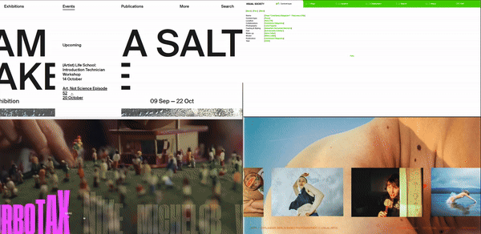

fuori salone
2024
An experimental multimedia design project for Milan's Fuori Salone 900+ exhibition
Roles
Team
Project Scope
Tools
Art Direction, Visual Design
Hugo Duran, Erika Wang, Jasper Precilla,
Tristan Turisno, Samaila Newaz
5 week school project
- IAT 438 - Fall 2023
Figma

brief
For a 5 week class project, my team was tasked with coming up
with a visual design intervention
for a cultural arts exhibition. The
project consisted in making both a poster and a micro-site for our
proposed
client, Fuorisalone.
the client
Fuorisalone is an annual event held in Milan that celebrates and
showcases design throughout the
city. Fuorisalone is defined by
its lack of central organizer, allowing anyone to participate and
independently
hold their own event. Each year, this results in
hundreds of events, ensuring that there is something to see
and
do at all times.
overview
With a focus on developing qualities and principles, our first three
weeks were dedicated to
developing our line of explorations. The
following weeks were used to familiarize ourselves with the Fuori
Salone in Milan so that we could successfully translate our final line
of exploration to portray the breadth
of our content.
the visual language
The overall visual language of the poster focused on a typographic
contrast of both Neue Haas Grotesk
and Azaret Mono. Neue Haas
Grotesk stays legible even when we apply texture and greatly
reduce leading and spacing.
Azeret Mono paired well with the
grotesk due to its contrast in both weight and spacing. It’s modern
look and feel
complemented Neue Haas’s classic aesthetic for a
contemporary appeal. Koulen was used for its condensed,
vertical
characters preventing type from getting too long while being
legibile at any angle.
secondary assets
Our exploration of the poster in assets from the second week
inspired us to work backwards,
tempering our use of colour and
space while further highlighting the principle of scale.

from print to digital
The final two weeks of the project were then used to translate our
chosen visual direction
into an interactive microsite for our given
client. We developed a content strategy and explored various
interactions
in order to develop a novel and expressive interactive experience.
content strategy
Fuori Salone houses over 900 exhibits annually, our challenge was
deciding on how we would
limit this amount of content. Thus rather
than explicitly talking about only the exhibits, our approach focuses
on the
themes that participating districts provide each year. Using tools such as
a quiz, and with layouts
that prioritize describing the background of the
districts, we prime the visitors for the event by guiding them
to craft a
personal experience to resonate with the themes.
interaction precedents
introduction
quizz entrance
These districts are not just a grouping of exhibits by proximity,
there are underlying themes
connecting them. The quiz is
designed to personalize the user experience to their input while
also getting
them to think about the topics related to each district.
To keep the visitor informed on their progress,
they are provided
with consistent feedback through numbers.
district content
Once the visitor has landed on the district page, we want to
establish a different mood from
each district that gives them a
vague idea of the district’s aesthetics and history. We then guide
the user
down the page using pink elements that bleed off the
edges to where the content will appear next. By making
each
paragraph appear as they scroll, there is a sense of reward as they
move down the page and we establish
that scrolling is how you
progress through the content.
the exhibits
At the bottom of each district page is a horizontal list of exhibits.
This section is meant to give
the user a break from the constant
stream of information and explore the exhibits at their own pace,
based on what
titles intrigue them. By hovering over the title’s,
they grow in size indicating that there is an interaction and on
click,
the title opens up to reveal details about each exhibit.
next district
Once the user is no longer interested in the exhibits, they can move to the following district by
continuing to scroll past a resistive border between districts. This continues our initial language
of scrolling,
while not allowing users to immediately or accidentally skip past the exhibit list of
each page. If the user is
unable to discover this scroll, they can also simply click on the next
district in the top-right navigation.